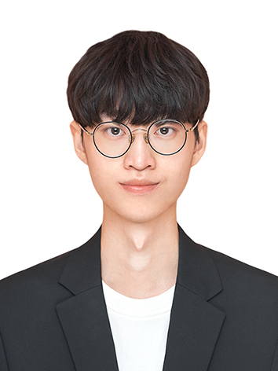

김태민 (Tae-Min Kim)
미래 모빌리티의 데이터 혁신을 이끄는 지능형자동차부품진흥원 디지털플랫폼팀 김태민입니다.
👋 About Me
현재 지능형자동차부품진흥원(KIAPI) 디지털플랫폼팀 주임 연구원으로 재직하고 있습니다. 자율주행 실차 환경의 CAN 통신 데이터 수집, 데이터 리버싱, 그리고 실시간 모니터링 플랫폼 구축 업무를 담당하며 자율주행 기술 혁신의 기반을 다지고 있습니다. 또한, 전자공학 석사 과정에서 디지털 영상 처리와 컴퓨터 비전을 활용한 DFC(Display Field Communication) 및 OCC(Optical Camera Communication) 연구를 수행한 경험을 바탕으로 모빌리티 데이터의 가치를 극대화하고자 합니다.
Hello! I am an Associate Research Engineer at the Digital Platform Team in KIAPI (Korea Intelligent Automotive Parts Promotion Institute). Currently, I am focusing on autonomous driving data, including CAN communication data acquisition, reverse engineering analysis, and developing real-time monitoring platforms. I hold a master’s degree in Electronic Engineering, with a strong research background in Display Field Communication (DFC) and Optical Camera Communication (OCC) using digital image processing and computer vision.
⚒️ Skill

Python

OpenCV
C++

Android

MATLAB
🎓 Degree
- M.S. in Electronic Engineering Yeungnam University Dept. of Electronic Engineering (2023.03 - 2025.02)
- B.S. in Electronic Engineering Yeungnam University Dept. of Electronic Engineering (2017.03 - 2023.02)
🏛 Career
- 지능형자동차부품진흥원 (KIAPI) 전략기획본부 혁신기술실 디지털플랫폼팀 주임 연구원 (2026.01 ~ )
- 영남대 공업 기술 연구소 연구원 (2025.03 ~ 2025.12)
📝 SCI/SCIE Paper
- Performance evaluation of data embedding schemes for two-dimensional Display Field Communication Tae-Min Kim, Pankaj Singh, Sung-Yoon Jung* (Optics Express: Impact Factor: 3.8, Optics:Q1, 2024)
📝 International Conference Paper
- [Oral Session] Image Segmentation Using YOLOv8 for Display Field Communication (DFC) Tae-Min Kim, Sung-Yoon Jung* (IEIE/IEEE International Conference on Consumer Electronics-Asia (ICCE-Asia), Danang, Vietnam, Nov. 2024)
📝 KCI Paper
- 가상환경에서 해상 풍력 발전기용 UAV를 위한 광 카메라 (OCC) 기술 연구 김태민, 김주현, 김유정, 김수진, 정성윤* (전자공학회논문지, 2024 11월호)
📝 Korea Conference Paper
- [Poster Session] 보색관계를 이용한 color barcode 기술 실험 박언지, 김유정, 김태민, 박주현 (한국통신학회 동계종합학술발표회, 2020.02)
- [Poster Session] 해상 풍력 발전기 안전관리를 위한 UAV 활용 방안 김민진, 김유정, 김수진, 김태민, 정성윤* (한국통신학회 동계종합학술발표회, 2023.02)
- [Poster Session] 2차원 디스플레이 기반 통신 (DFC)을 위한 데이터 임베딩 기법 연구 김태민, 이대규, 정성윤* (대한전자공학회 하계학술대회, 2023.06)
- [Poster Session] 풍력 발전기에서 UAV 를 이용한 광 카메라 통신(OCC) 가상 환경 연구 김태민, 김주현, 정성윤* (한국통신학회 동계종합학술발표회, 2024.02)
🌍 Activities
- 학부 연구생 (Undergraduate Research Student) 🔗 YU Ubiquitous Comm. Lab (2019.03 - 2020.02) 🔗 YU Ubiquitous Comm. Lab (2022.03 - 2023.02)
- 석사 과정 연구생 (Master's Research Student) 🔗 YU Ubiquitous Comm. Lab (2023.03 - 2025.12)
- [산학협력 프로젝트] 디스플레이 기반 통신 원천 기술 LINC 3.0 사업단 산학 공동 과제 개발 연구원 참여 (2023.06 - 2023.11)
- [예비 창업] 2024 경산 창업 네트워크 예비 창업팀(영남대) StegaVision DFC 디지털 신분증 기술 지원 팀원 참여 (2024.06 - 2024.12)
- [예비 창업] 2024 창업 유망주 300+(대경강원권) 미스틱링크 🔗 가상 IPO 기업 공개 (교육부, 한국연구재단(NRF) 주관) 디스플레이-카메라 간 무선 통신을 이용한 디지털 신분증 기술 지원 팀원 참여 (2024.07 - 2024.10)
- [예비 창업] 2024 YUnicorn ESG창업경진대회 StegaVision DFC 디지털 신분결제 시스템 창업 아디이어/IR 자료 담당 (2024.07 - 2024.08)
- [예비 창업] 2024 G-Star Pitchday 3차 예선 및 본선 미스틱링크 경북창조경제혁신센터 주관 / 디스플레이-카메라 간 무선 통신을 이용한 디지털 신분증 창업 아디이어/IR 자료 담당 (3차 예선: 2024.08.23, 본선:2024.09.10)
- [예비 창업] 2024 G-Star Pitchday Boost-Up 캠프 본선 (24팀) 미스틱링크 대구창조경제혁신센터, 경북창조경제혁신센터 공동 주관 창업 아디이어/IR 자료 담당 (2024.09.04)
- [공모전 & 창업 아이템] 2024 코드게이트 글로벌 AI 아이디어랩 공모전 본선(10팀) 미스틱링크 코드게이트 주관 / AI 기술로 보안성을 강화한 디지털 히든 워터마킹 창업 아디이어/본선 발표 (2024.08.29)
- [공모전 AI 아이디어] 2024 경북 소재 인공지능(AI) 기반 콘텐츠 사업화 아이디어 공모전 본선 미스틱링크 경북 문화 재단 콘텐츠 진흥원 / AI 기술을 활용한 디지털 사이니지 아디이어/본선 발표 (2024.08)
🏆 Awards
- [산학협력 프로젝트] 2023년 대경권 우수 성과 공유 워크숍-대학원생 논문 발표 경진대회 (우수상) 수신단 S/W 담당 연구원 참여 (2024.01.22)
- [IR 피칭] 2024 YUnicorn ESG 창업경진대회 (대상) StegaVision 창업 아이디어/IR 자료 담당 (2024.07 - 2024.08)
- [IR 피칭] 2024 G-Star Pitchday (3차 예선 장려상 & 본선 진출) 미스틱링크 창업 아디이어/IR 자료 담당 (3차 예선: 2024.08.23, 본선:2024.09.10)
- [공모전 AI 아이디어어] 2024 경북 소재 인공지능(AI) 기반 콘텐츠 사업화 아이디어 공모전 (장려상) 미스틱링크 아디이어/IR 자료 담당 (수상:2024.11.11)